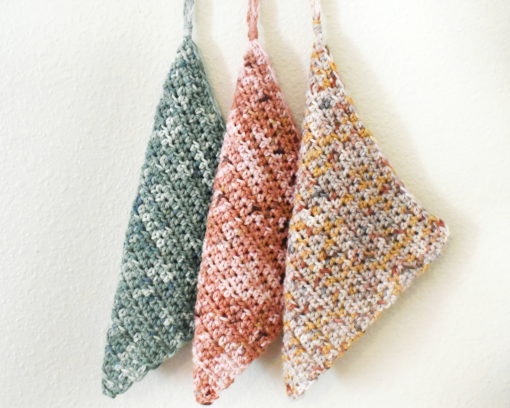
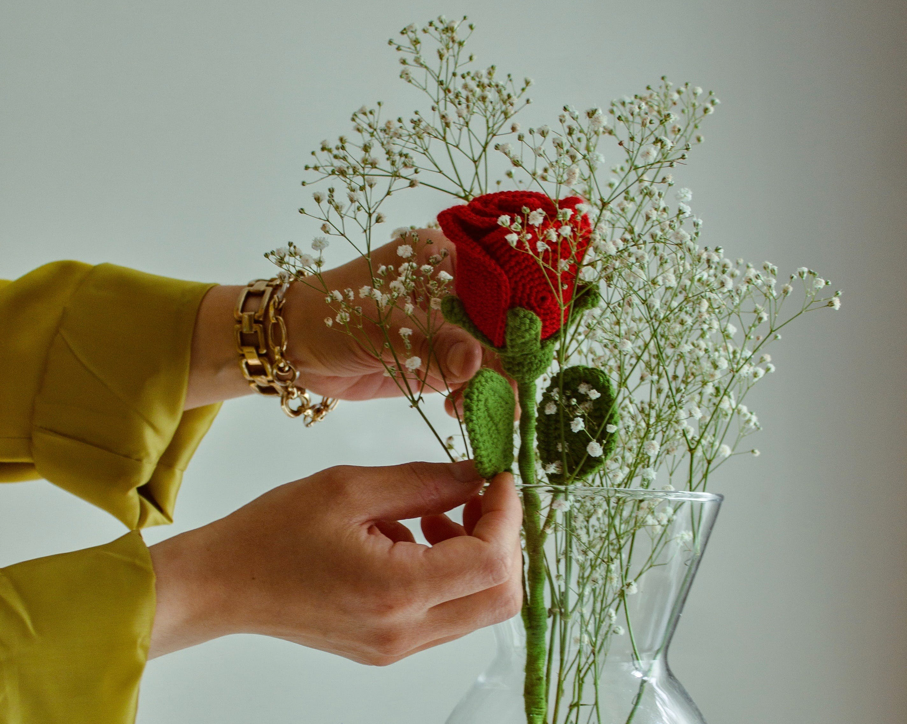

Patterns
Tutorials
Inspiration
Subscribe
About
Inspiration Photo Gallery

Reuseable Handcloths
Coaster
Pillow
Floral Granny Square Backpack

Rose
Amigurumi Bear Plush
Holiday Ornaments
Amigurumi Mushroom Plush